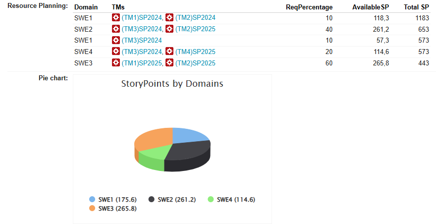
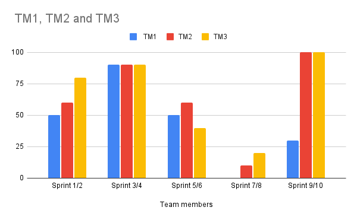

Resource Planning in Codebeamer
A capacity planning system built inside Codebeamer ALM for the electronics development team. Team members log their availability per sprint, and project managers and team leads see the totals per milestone and domain without collecting them by hand.
Who is available, for which domain, in which milestone?
Project managers assign work by domain and milestone, while team leads plan sprint by sprint. Availability, holidays and trainings were known to each person, but there was no single place where capacity could be added up for a given milestone and split by domain.
Log once, compute everywhere
Starting from the team's concept, I defined three user roles and their user stories, and a simple unit: one working day equals 8 story points, one two-week sprint 80 story points.
What I built in Codebeamer
Two linked trackers
Team members with one item per year, and milestones that reference them through choice fields.
Computed fields in UEL
Sums each member's story points across the selected sprint and year range, then applies the domain percentage.
Automatic domain chart
A wiki field builds a pie chart of available story points per domain directly from the planning table.
Three role views
Project manager, team lead and team member each get filtered views by person, sprint or domain.

Capacity per milestone and domain, without manual totals
Changing a milestone window or a domain percentage updates the available story points and the chart immediately. Along the way I solved two recurring issues: a type mismatch when reading values through linked trackers, fixed with an aggregate function, and columns calculating outside the selected range, fixed with guard conditions per column. I documented both for the team and presented the system with user stories and role views. To show my team lead how the computed values come about, I also charted one team member's story points against planned workload per sprint: wherever the workload line rises above 100 %, that person is over-allocated before the milestone starts.


All screenshots and charts show sample data from a test environment. No project names or real team data are published here.